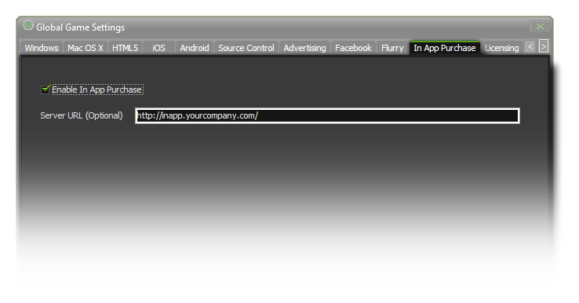

IAP Server Setup
This section deals with setting up your own in app purchases server.
If you wish to make use of a proprietary web server for retrieving available products (allowing you to dynamically update the set of products available for a title without the need to update your title) and/or
for verifying Apple Store receipts then you should follow the following instrauctions for setting the whole system up.
First, when setting up your own server, you should be aware that GameMaker:Studio will require that it honours the following API calls:
- {URL}/products/purchases?product={yourpackagename}
- {URL}/admin/verify?receipt={applestorereceipt}
Once that is done you will need to add the necessary information too, so that when the API call of ?b>products/purchases?product=?is queried by the GameMaker:Studio runner the returned
data is correctly formated. This means that the data must be provided in the form of JSON with the following format (using example values):
[{
�price":"0.69",
"name":"Extra Levels Pack 1",
"product_id":3,
"url":"http://MacSweeneyServer.com/ExtraLevels1.zip",
"description":"Levels Pack 1",
"purchase_id":"com.MacSweeneyGames.droid.cc.pack1",
"path":"ExtraLevels/1"
},
{
"price":"1.00",
"name":�Extra Levels Pack 2",
"product_id":3,
"url":"http://MacSweeneyServer.com/ExtraLevels2.zip",
"description":"Levels Pack 2"
"purchase_id":"com.MacSweeneyGames.droid.cc.pack2",
"path":"ExtraLevels/2",
}]
Please note that the values for the �title? �description?and �price?fields are only placeholders for iOS titles and the actual values are filled in from the settings on the Apple Store which also
correctly adjusts the price according to region. On Android titles no such facility exists thus the values should be provided accurately.
One last piece of JSON that must also be included is for when the GameMaker:Studio runner queries the API call of ?b>admin/verify?receipt=? The returned data must be provided in the form
of JSON with the following format:
[{
�status?�true?br>
}]
Finally, to use in-app purchases with your proprietary developer server you will need to configure your title in the Global Game
Settings as in the following image:
